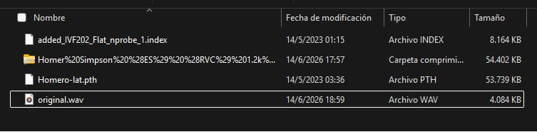
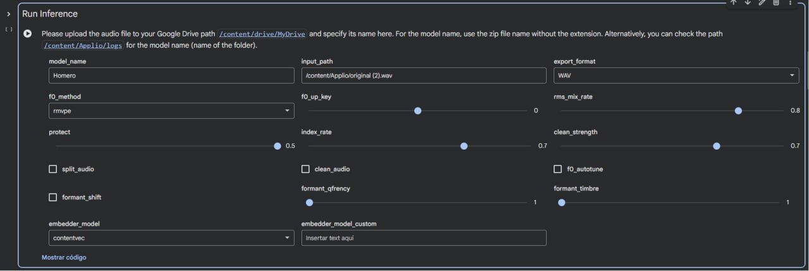
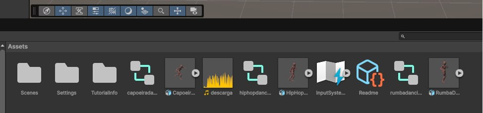
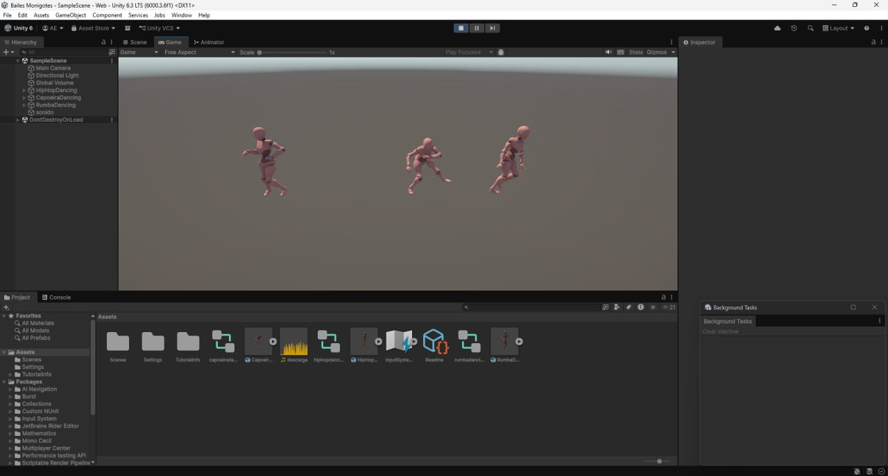

Primera etapa del proyecto. Se grabó una interpretación propia de la canción "La Vaca Lola" y posteriormente se descargó desde Hugging Face un modelo de voz entrenado del artista seleccionado para realizar la conversión.

Se cargó la grabación en Applio utilizando Google Colab y se aplicó el modelo de voz descargado. El resultado fue un nuevo audio que conserva la melodía original, pero con la voz del artista elegido.

El archivo de audio generado se importó al proyecto de Unity. También se prepararon los modelos 3D y se configuró el componente AudioSource para reproducir la canción dentro de la escena.

Mediante el componente Animator se añadieron las animaciones del personaje 3D. Finalmente, se sincronizaron los movimientos con la música para obtener la presentación completa del proyecto.